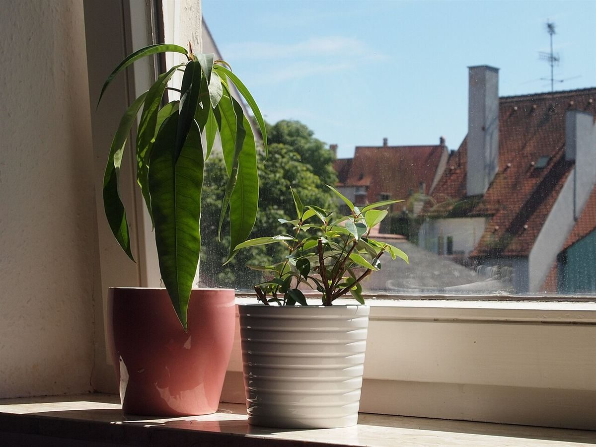
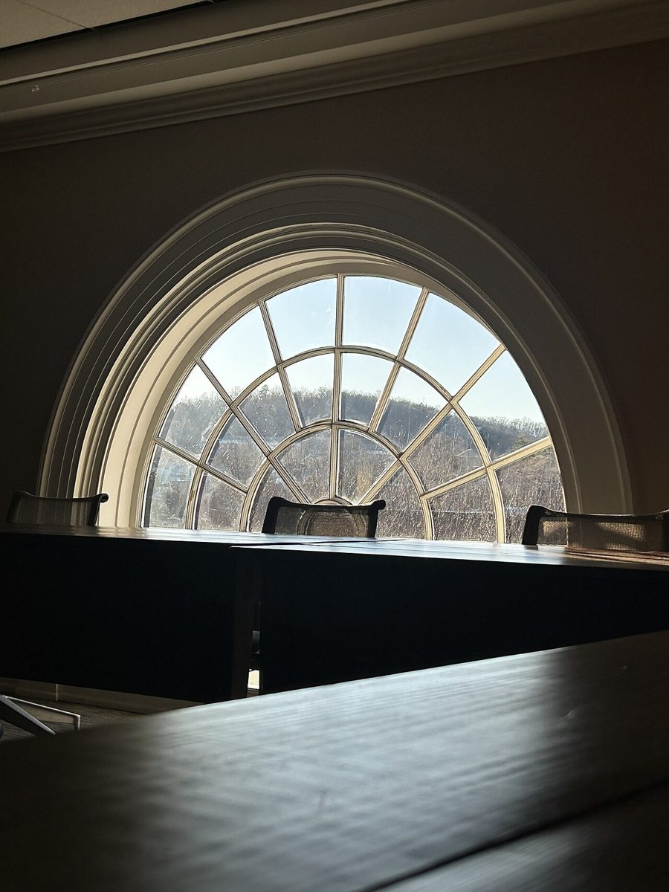
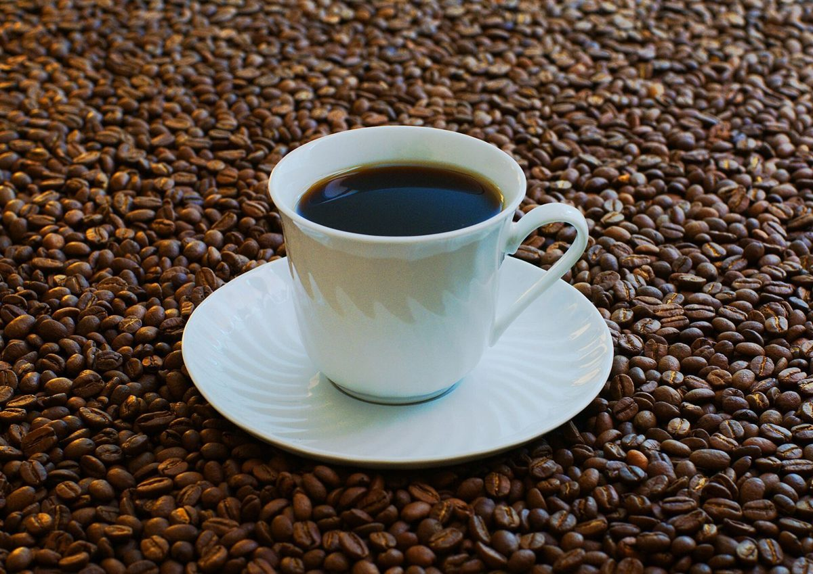

店のこと
見返しに書けること
お店について確認できているのは、所在地とInstagramのアカウントだけです。
確認できていること
- 店名は「NIKKI COFFEE SPACE」、業種はカフェ
- 所在地は三重県津市長岡町3060-2
- 電話番号はなし。連絡はInstagramから
- 営業時間・定休日 準備中
- メニュー・価格 準備中
- ご予約・駐車場 準備中

想像してみる
「日記」という連想から
この部分は制作側が想像して書いたものです。お店の実際の様子・考え・メニューとは関係がありません。
由来は分かりませんが、制作側は、ゆっくり書きものをしたり、考えごとをしたりするのに向いた店かもしれない、と想像しました。たとえば窓辺の席で、ノートを開く。そんな時間を思い浮かべています(実際のお店の姿ではありません)。



町のこと
津市について
津市は三重県の県庁所在地です。ただし、お店が地域のどんな場所や催しと関わっているかは分かりません。